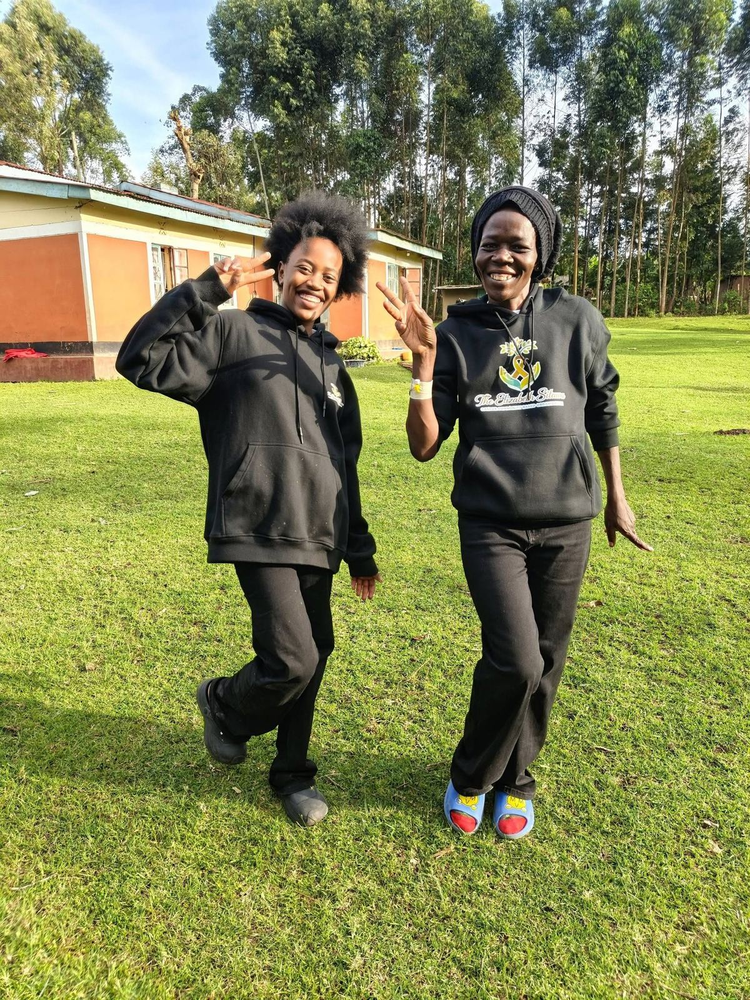

Get Support
You do not have to walk this journey alone. Tell us how we can support you.
The fastest ways to get in touch.
If you need to speak with someone urgently, the details below are the quickest way to reach us. If any of these are not yet active for you, use the request form further down this page instead.
You can also reach our community directly through our Facebook group. To arrange an in-person visit to our office, please call or message us first so we can confirm a time.
Cancer Support Services.
As a locally rooted, volunteer-led organization, what we can offer grows as our resources do. Every service below is available to reach out about. Select a service to see who it's for and how to request it.

Awareness, Detection & Navigation
Helping people understand cancer, catch it early, and find their way through the health system.
Emotional & Community Support
A steady presence for patients, survivors, caregivers and families throughout the journey.
Practical & Financial Assistance
Removing the everyday barriers that stand between a patient and their treatment.
Tell us a little about what you need.
This is not a medical form and nothing here is urgent-only. You can reach out for information, for a listening ear, or for practical help. Share as much or as little as you're comfortable with.
Refer a patient who may need support.
If you know someone facing cancer who may benefit from our support, you can refer them here, with their knowledge and permission.
Support for the people doing the caring.
Caregiving is real work, and it is easy to put your own needs last. If you are caring for someone with cancer, this is for you too.
Reliable places to learn more.
These external resources are not affiliated with our organization, but they are widely recognized, reputable sources for cancer information.
World Health Organization: Cancer
Global, evidence-based information on cancer types, prevention and treatment.
Visit who.intMinistry of Health, Kenya
National health guidance, including non-communicable disease and cancer programs.
Visit health.go.keFor diagnosis, screening and treatment, please speak with a qualified healthcare provider or visit your nearest hospital.